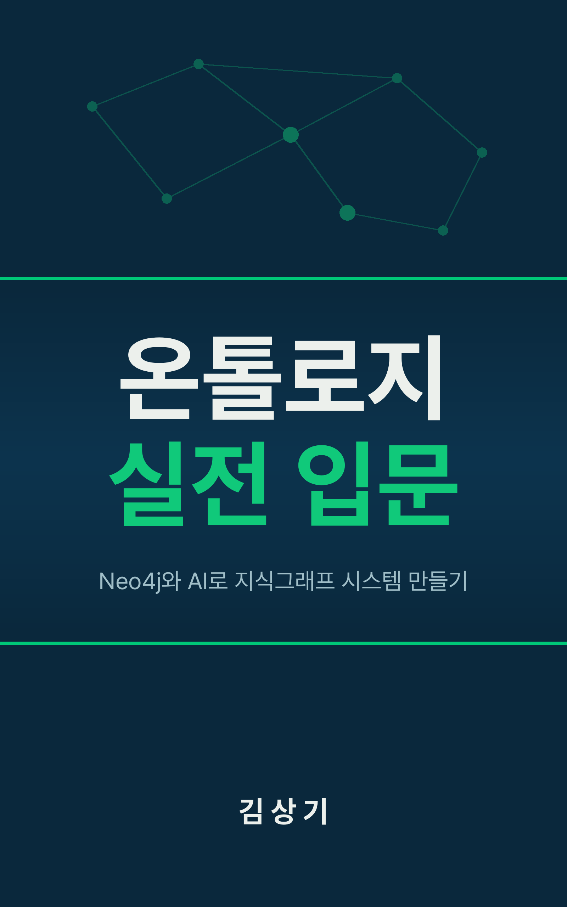

온톨로지
실전 입문
Neo4j와 AI로 지식그래프 시스템 만들기
"육아휴직 중 연차는 어떻게 되나요?"라는 한 줄의 질문이, 우리를 어디까지 데려갈 수 있는지 함께 살펴보자.
머리말

이 질문에 챗봇은 답할 수 있을까
"육아휴직 중인데, 남은 연차는 어떻게 되나요?
복직하면 바로 쓸 수 있나요?"
1장, 월요일 아침 사내 메신저에 올라온 질문
HR팀 담당자는 이 질문에 답하려면 최소 세 가지 규정을 교차로 확인해야 한다. 육아휴직 규정, 연차 산정 기준, 복직 후 근로 조건. 키워드 검색은 동의어를 모르고, 맥락을 무시한다. 벡터 RAG는 조각을 따로 찾을 뿐, 조각들 사이의 연결 고리를 따라가지 못한다.
설계도 · 건물 · 그릇 · 통로 · 조명
| 이 책의 요소 | 비유 | 장 |
|---|---|---|
| 온톨로지 | 도메인의 설계도 | 2·4장 |
| 지식그래프 | 그 설계도 위에 세운 건물 | 5장 |
| Neo4j | 그 건물을 담는 그릇 | 3장 |
| GraphRAG | 건물 안의 지식을 사람에게 전달하는 통로 | 7·8장 |
| GDS | 건물의 숨은 구조를 밝혀주는 조명 | 6장 |
도구를 고르기 전에 "어떤 문제를 풀 것인가"부터 정해야 한다(11장 마무리).
HR안내봇 하나를 1장에서 시작해 11장에서 완성한다
기초 다지기(1~3장) → 연결하고 통합하기(4~8장) → 확장하고 결정하기(9~11장).
왜 그래프이고, 무엇으로 그리는가
키워드 검색과 벡터 RAG가 놓치는 것을 확인하고, 온톨로지의 뼈대를 배우고, Neo4j라는 도구를 손에 쥔다.
- 1장. 왜 지식그래프인가
- 2장. 온톨로지 핵심 개념
- 3장. Neo4j 시작하기
질문 하나에 건너야 할 다리가 여럿이다
A에서 B로, B에서 C로, C에서 D로 건너가며 답을 조립하는 과정이 멀티홉 추론이다. 관계의 사슬이 있으면 답이 조립된다.
"김철수님, 육아휴직 기간에는 새로운 연차가 발생하지 않습니다. 다만 휴직 전 남은 연차는 복직 후 바로 사용하실 수 있습니다." 김철수·박영수·인사팀 같은 이름과 데이터는 책의 실습용 예시다.
관계 기반 질문에서 격차가 두드러진다
수치는 원고가 인용한 외부 평가·사례 그대로다. 엔터프라이즈 지식그래프 ROI 300~320%라는 조사 결과도 원고에 있지만, 모든 프로젝트가 이 수준의 성과를 내는 것은 아니다.
우리 조직에 지식그래프가 필요한가?
| 판단 기준 | 벡터 RAG로 충분 | 지식그래프가 필요 |
|---|---|---|
| 질문의 복잡도 | 단일 문서에서 답을 찾을 수 있는 질문이 대부분 | 여러 문서·규정을 교차 참조해야 하는 질문이 빈번 |
| 관계의 중요도 | 개별 문서의 내용이 독립적으로 의미 있음 | 데이터 간 관계(소속, 적용, 영향)가 답변 품질을 좌우 |
| 추론 깊이 | 1~2홉이면 충분 (질문 → 문서 → 답변) | 3홉 이상의 멀티홉 추론이 필요 (A→B→C→답변) |
세 기준 중 두 가지 이상에서 "지식그래프가 필요" 쪽에 해당한다면, 이 책이 다루는 접근법을 진지하게 검토하는 편이 낫다.
설계도와 건물
온톨로지는 설계도이고,
지식그래프는 그 설계도로 지은 건물이다.
2장. 학술적 정의는 Gruber(1993): "공유된 개념화의 명시적 명세(explicit specification of a shared conceptualization)."
온톨로지가 "고객(Customer)은 주문(Order)을 할 수 있다"는 규칙을 정의한다면, 지식그래프는 "고객 123이 2026년 3월 1일에 주문 456을 했다"는 실제 데이터를 담는다. 설계도 없이 지은 건물은, 나중에 증축하거나 수리할 때 어디에 기둥이 있는지, 배관이 어디를 지나는지 아무도 모른다.
온톨로지의 뼈대는 다섯 가지다
| 구성 요소 | 역할 | HR 도메인 예시 |
|---|---|---|
| 클래스 | 개체의 유형/범주 | 직원, 부서, 직급, 정책, 복리후생 |
| 인스턴스 | 클래스의 구체적 개체 | 김철수, 인사팀, 육아휴직 정책 |
| 프로퍼티 | 개체의 속성 | 이름, 입사일, 시행일, 지급액 |
| 관계 | 개체 간 연결 | belongsTo, reportsTo, appliesTo, affects |
| 공리 | 도메인 규칙/제약 | "모든 직원은 하나의 부서에 소속" |
어떤 온톨로지 표준을 선택할 것인가?
| 선택지 | 표현력 | 학습 곡선 | 추천 상황 |
|---|---|---|---|
| SKOS | 분류/동의어 | 1~2일 | 검색 개선, 태그 관리, 시소러스 구축 |
| RDFS | 기본 모델링 | 1~2주 | PoC, 소규모 도메인, 빠른 시작 |
| OWL DL | 추론 가능 | 2~4주 | 엔터프라이즈 지식그래프, 데이터 품질 중시 |
HR안내봇은 OWL을 기본으로 쓴다. 정책 간 영향 관계, 직원-부서 카디널리티 제약을 표현하려면 OWL 수준의 표현력이 필요하다. 다만 RDFS 수준에서 시작해 필요에 따라 OWL 기능을 더하는 점진적 접근이 현실적이다.
너무 크게, 또는 너무 작게
Juan Sequeda의 교훈: "충분히 좋은 온톨로지가 완벽한 온톨로지보다 낫다."
명사는 노드, 동사는 관계, 형용사는 속성
"이것이 명사인가, 동사인가, 형용사인가?"라고 물어보면 어떤 도메인의 데이터든 그래프로 모델링할 수 있다.
3홉도 패턴을 이어 붙이면 된다
괄호가 노드, 대괄호가 관계, 화살표가 방향이다. 그래프의 모양을 텍스트로 그리는 셈이다.
// 김철수의 매니저의 매니저가 관리하는 정책 찾기 (3홉)
MATCH (e:Employee {name: "김철수"})
-[:REPORTS_TO]->(m1:Employee)
-[:REPORTS_TO]->(m2:Employee)
-[:MANAGES]->(p:Policy)
RETURN m2.name AS 상위매니저, p.name AS 정책관계형 데이터베이스에서는 홉이 늘어날수록 쿼리가 급격히 복잡해지지만, Cypher에서는 패턴을 이어 붙이기만 하면 된다. 3장 샘플: 직원 10명, 부서 3개, 정책 5개.
어떤 그래프 데이터베이스를 선택할 것인가?
| 기준 | Neo4j | Amazon Neptune | TigerGraph |
|---|---|---|---|
| 쿼리 언어 | Cypher | SPARQL + Gremlin + openCypher | GSQL |
| GDS(그래프 분석) | 60+ 알고리즘 | 제한적 | 강력 |
| 온톨로지 지원 | n10s 플러그인 | 네이티브 RDF | 제한적 |
| 적합 시나리오 | GraphRAG, 지식그래프, 범용 | AWS 환경, RDF 중심 | 대규모 분석 |
원고의 표에는 NebulaGraph(nGQL, 오픈소스)도 있다. 판단 기준: 이미 AWS에 깊이 묶여 있다면 Neptune, 초대규모 분석이 핵심이면 TigerGraph, 지식그래프 + AI 통합이 목표면 Neo4j.
설계도를 그리고, 심고, 분석하고, AI와 잇는다
온톨로지를 설계하고, 지식그래프로 구현하고, 그래프 분석으로 인사이트를 발굴하고, AI와 연결하여 HR안내봇을 완성한다.
- 4장. 온톨로지 설계 실전
- 5장. 온톨로지를 Neo4j에 심기
- 6장. 그래프 알고리즘과 GDS
- 7장. AI와 지식그래프의 만남
- 8장. HR안내봇 만들기
Protege 수동 설계 vs LLM 자동 생성 + 정제
| 기준 | 경로 A: Protege 수동 설계 | 경로 B: LLM 자동 생성 + 정제 |
|---|---|---|
| 소요 시간 | 수 시간 ~ 수일 | 수 분 ~ 수 시간 (정제 포함) |
| 정교함 | 높음(공리까지 세밀하게 제어) | 중간(공리 품질은 검증 필요) |
| 재현성 | 높음 | 낮음(LLM 출력이 매번 다를 수 있음) |
| 적합 상황 | 핵심 도메인, 높은 품질 요구, 규제 환경 | 빠른 PoC, 대규모 도메인, 초기 탐색 |
실무에서 가장 많이 쓰이는 방식은 하이브리드다. "AI가 초안을 잡고, 전문가가 정제하는" 협업 모델이다. LLM이 80%를 빠르게 만들어주면, 도메인 전문가가 나머지 20%를 검증하고 보완한다.
"충분히 좋은" 온톨로지의 크기
과하게 복잡하지도, 지나치게 단순하지도 않은 설계도. 최종 산출물은 Turtle 파일(hr-ontology.ttl)이다.
공리가 파일 안에서 어떻게 생겼나
"모든 직원은 정확히 하나의 부서에 소속된다", "정규직과 계약직은 겹치지 않는다"가 기계가 읽는 문장이 된다.
hr:Employee a owl:Class ;
rdfs:subClassOf hr:Person ;
rdfs:subClassOf [
a owl:Restriction ;
owl:onProperty hr:belongsTo ;
owl:qualifiedCardinality "1"^^xsd:nonNegativeInteger ;
owl:onClass hr:Department
] .
hr:FullTimeEmployee a owl:Class ;
rdfs:subClassOf hr:Employee ;
owl:disjointWith hr:ContractEmployee .LLM 생성 결과는 클래스와 관계는 비교적 잘 만들지만, 카디널리티 제약·배타 클래스 같은 정교한 공리는 누락하거나 잘못 정의하는 경우가 있다.
RDF/OWL 세계와 LPG 세계를 잇는 다리
임포트하면 온톨로지의 각 클래스가 Class 라벨 노드가 되고, rdfs:subClassOf는 SCO 관계로, 프로퍼티는 ObjectProperty·DatatypeProperty 노드가 된다.
// 온톨로지 파일 임포트 (로컬 파일 경로)
CALL n10s.onto.import.fetch(
'file:///path/to/hr-ontology.ttl',
'Turtle'
)n10s는 Neo4j Labs가 공식으로 관리하는 플러그인으로, OWL·RDFS·SKOS 온톨로지를 Neo4j로 임포트하고 Neo4j 데이터를 RDF로 내보낸다.
3장의 "대충 정한" 데이터를 온톨로지에 맞춘다
| 단계 | 3장 데이터 | 온톨로지 기준 |
|---|---|---|
| 1단계: 라벨 재매핑 | Person · Dept · Rule | Employee · Department · Policy |
| 2단계: 관계 재매핑 | WORKS_IN | BELONGS_TO (새 관계를 만들고 원래 관계를 지운다) |
| 3단계: 속성 정규화 | employee_id · hire_date(문자열) | employeeId(카멜케이스) · Neo4j date 타입 |
Cypher에는 기존 관계의 타입을 직접 바꾸는 문법이 없어 2단계가 라벨보다 조금 더 번거롭다. 실무에서 "레거시 데이터를 새 스키마로 전환하는" 경험을 미리 체득하는 장이다.
이제 멀티홉 질문에 답한다
// Person → Employee 라벨 변환
MATCH (p:Person)
SET p:Employee
REMOVE p:Person
RETURN count(p) AS migratedEmployees
// 멀티홉 쿼리 테스트
MATCH (e:Employee {name: '김철수'})-[:REPORTS_TO]->(m:Employee)
MATCH (m)-[:MANAGES]->(d:Department)<-[:APPLIES_TO]-(p:Policy)
RETURN e.name AS employee, m.name AS manager,
d.name AS department, collect(p.title) AS relatedPolicies5장 진행도: 직원 100명, 부서 8개, 정책 15개, 복리후생 10개. 3장에서는 "인사팀 소속 직원 목록"을 겨우 조회하는 수준이었지만, 이제는 "김철수의 매니저가 관리하는 정책"에도 답할 수 있다.
분석에 필요한 노드와 관계만 메모리에 복사한다
GDS는 60개 이상의 그래프 알고리즘을 제공하며, 대부분 프로젝션 → 알고리즘 실행 → 결과 활용의 세 단계로 실행된다.
CALL gds.graph.project(
'hr-org-graph',
['Employee', 'Department', 'Policy'],
{
BELONGS_TO: { orientation: 'UNDIRECTED' },
REPORTS_TO: { orientation: 'NATURAL' },
COLLABORATES_WITH: { orientation: 'UNDIRECTED' },
APPLIES_TO: { orientation: 'UNDIRECTED' }
}
)REPORTS_TO는 방향이 의미를 가지므로 NATURAL, COLLABORATES_WITH는 양방향이므로 UNDIRECTED. 이 설정을 잘못하면 알고리즘 결과가 완전히 달라질 수 있다.
조직도에 없는 구조를 숫자로 꺼낸다
최단 경로로 부서 간 소통 경로를, Node Similarity로 스킬 기반 직원 매칭도 분석한다.
숫자를 보고 무엇을 할지는 사람이 정한다
PageRank 1위가 반드시 최고의 직원은 아니며,
커뮤니티가 나뉜다고 반드시 문제인 것도 아니다.
6장 마무리
알고리즘이 내놓은 숫자 자체보다, 그 숫자가 비즈니스 맥락에서 무엇을 의미하는지 해석하는 것이 더 중요하다. 숫자를 보고 무엇을 할지는 그 맥락을 아는 사람이 정한다.
LLM과 지식그래프를 잇는 네 방식
| 패턴 | 구현 복잡도 | 멀티홉 추론 | 적합 시나리오 |
|---|---|---|---|
| Text-to-Cypher | 낮음 | 가능 (Cypher 정확도 의존) | 정형 질문, 수치 조회 |
| Graph-Enhanced RAG | 중간 | 자연스러움 | 복합 질문, HR안내봇 |
| LLM 그래프 구축 | 중간 | 해당 없음 | 문서 자동 구조화 |
| Agentic GraphRAG | 높음 | 매우 강함 | 복잡한 분석 대화 |
권장 조합: Graph-Enhanced RAG를 기본으로 하되, 정형 질문에는 Text-to-Cypher를 보조로, 문서 유입에는 LLM 그래프 구축을 추가하는 하이브리드.
쿼리 라우터가 질문을 나눠 보낸다
1장의 질문 시나리오 20개를 분류하면 구조적 7개, 텍스트 6개, 분석 3개, 복합 4개. 유형이 고르게 섞여 있어 하나의 패턴으로 모든 질문을 처리하기 어렵다.
[사용자 질문]
↓
[쿼리 라우터 (LLM)]
├─ STRUCTURAL → Graph Retriever (Cypher)
├─ TEXTUAL → Vector Retriever (임베딩 검색)
├─ ANALYTICAL → GDS Metadata Retriever
└─ HYBRID → Graph + Vector + GDS 통합
↓
[맥락 통합기]
↓
[LLM 답변 생성]HR안내봇의 선택: Graph-Enhanced RAG를 기본으로 하되 GDS 메타데이터 리트리버를 추가하고, 정형 질문에는 Text-to-Cypher를 보조로 쓴다.
벡터로 찾고, Cypher로 주변을 더 가져온다
retriever = VectorCypherRetriever(
driver=driver,
index_name="policy-embeddings",
# 벡터 검색으로 찾은 노드에서 추가 그래프 탐색
retrieval_query="""
MATCH (node)-[:APPLIES_TO]->(target)
OPTIONAL MATCH (node)-[:RELATED_TO]->(related)
RETURN node.title AS title,
node.content AS content,
collect(DISTINCT target.name) AS appliesTo,
collect(DISTINCT related.title) AS relatedPolicies,
score
"""
)pip install neo4j-graphrag. 벡터의 의미적 검색과 그래프의 구조적 탐색이 하나의 리트리버 안에서 결합된다.
여섯 개의 컴포넌트가 파이프라인으로 연결된다
데이터 레이어: Neo4j에 온톨로지(4장) + 지식그래프(5장) + GDS(6장), 벡터 인덱스에 HR 정책 문서 임베딩.
- 질문 분류기: LLM 기반 4유형 분류 (STRUCTURAL, TEXTUAL, ANALYTICAL, HYBRID)
- 엔티티 추출기: LLM 기반 6유형 엔티티 추출 (JSON 출력)
- 리트리버: 그래프 · 벡터(Neo4j 벡터 인덱스 + OpenAI 임베딩) · GDS 메타데이터 · 하이브리드
- 맥락 통합기: 섹션 구분 + 중복 제거
- 답변 생성기: LLM 기반 자연어 답변 (temperature 0.3)
시나리오 테스트: 1장의 20개 중 대표 13개 시나리오 (구조적 4, 텍스트 3, 분석 3, 복합 3). 멀티홉 + GDS + 벡터 통합 답변 생성에 성공했다.
프로토타입에서 어디까지 검증할 것인가?
| 검증 항목 | MVP 기준선 | 측정 방법 |
|---|---|---|
| 질문 분류 정확도 | 80% 이상 | 테스트 시나리오 20개 기준 유형 일치율 |
| 답변 관련성 | 70% 이상 | 키워드 매칭 + 사람 평가 샘플링 |
| 멀티홉 정확도 | 60% 이상 | 2홉 이상 질문 중 정확한 관계 추론 비율 |
| 응답 시간 | 5초 이내 | 질문~답변 종단 시간 |
| 할루시네이션 | 5% 미만 | 존재하지 않는 정보를 생성한 비율 |
Go/No-Go: 4개 이상 충족 → Go, 2~3개 → 조건부 Go, 1개 이하 → No-Go. 이 단계에서 할 일은 "이 접근 방식이 작동하는가"를 입증하는 것이다.
만든 것을 지키고, 옮기고, 조직에 심는다
프로토타입의 품질을 관리하고, 프로덕션으로 끌어올리고, 조직 도입 전략을 세운다.
- 9장. 지식그래프 품질 관리
- 10장. 프로덕션으로 가는 길
- 11장. 기술 리더의 도입 전략
두 층으로 검증한다
결과가 하나라도 나오면 고칠 데이터가 있다
// 부서 없는 직원 탐지 (필수 관계 위반)
MATCH (e:Employee)
WHERE NOT (e)-[:BELONGS_TO]->(:Department)
RETURN e.name AS orphanEmployee, e.employeeId
// 순환 보고 관계 탐지 (자기 자신에게 보고)
MATCH (e:Employee)-[:REPORTS_TO*1..5]->(e)
RETURN e.name AS circularReport품질 메트릭 네 가지: 완전성, 정확성, 최신성, 연결성. 신호등 예: 완전성 95% 이상 녹색, 90~95% 노란색, 90% 미만 빨간색. 직원 소속 부서 완전성은 100%여야 한다.
변경의 종류에 따라 버전을 올린다
| 변경 유형 | 위험도 | 시맨틱 버전닝 |
|---|---|---|
| 추가: 새 클래스·프로퍼티·관계 | 가장 흔하고 가장 안전 | 마이너 (v1.0.1 → v1.1.0) |
| 수정: 이름·도메인/레인지·제약 변경 | 기존 쿼리가 깨질 수 있음 | 메이저 (v1.1.0 → v2.0.0), 마이그레이션 스크립트 동반 |
| 삭제: 클래스·관계 제거 | 가장 위험, 고아 노드 발생 | 메이저, 충분한 영향 분석 후에만 |
HR안내봇에 추가된 것: 50개 질문-정답 쌍의 골든 데이터셋 기반 답변 정확도 평가, Git 기반 버전 관리 + PR 워크플로우, LLM 기반 신규 HR 정책 문서 분석과 온톨로지 업데이트 제안.
HR 데이터는 민감하다
| 등급 | 예시 데이터 | 접근 범위 |
|---|---|---|
| 공개 | 부서명, 직급 체계, 일반 정책 | 전 직원 |
| 내부 | 직원 소속, 보고 관계, 근무지 | 해당 부서 + HR |
| 기밀 | 급여, 평가, 징계 이력 | HR 담당자 + 직속 상사 |
| 극비 | 구조조정 계획, 해고 예정자 | 경영진 + HR 리더 |
Neo4j Enterprise Edition은 RBAC를 제공한다. Community Edition에서는 애플리케이션 레이어에서 권한 체크를 구현해야 한다. LLM에 맥락을 넘길 때는 민감 필드 마스킹, 온프레미스 LLM, LLM을 거치지 않는 경로 중에서 고른다.
클라우드 매니지드 vs 셀프호스팅?
| 기준 | AuraDB (매니지드) | 셀프호스팅 (Enterprise) |
|---|---|---|
| 초기 구축 비용 | 낮음 (바로 시작) | 높음 (인프라 + 라이선스) |
| 운영 인력 | 최소 (Neo4j가 관리) | DBA 또는 DevOps 필요 |
| 플러그인 자유도 | 제한적 | 완전 자유 |
| 데이터 위치 | 외부 클라우드 | 자체 인프라 |
| GDS 사용 | AuraDS 별도 서비스 | Enterprise 라이선스에 포함 |
팀에 그래프 DB 운영 경험이 없고 데이터 규제가 까다롭지 않다면 AuraDB로 시작. 데이터 주권이 중요하거나 GDS를 적극 활용할 계획이라면 셀프호스팅 Enterprise. 점진적 전환은 마이그레이션 비용을 미리 감안한다.
하루 1,000건의 질문이면 3,000번의 LLM 호출
질문 분류에 한 번, 엔티티 추출에 한 번, 최종 답변 생성에 한 번.
다섯 가지 판단 기준
- 기준 1: 데이터 간 관계가 비즈니스의 핵심인가
- 기준 2: 비정형 지식이 흩어져 있는가
- 기준 3: AI 기반 질의응답의 정확도가 중요한가
- 기준 4: 도메인 지식이 자주 변하는가
- 기준 5: 설명 가능성이 요구되는가
다섯 기준 중 세 개 이상에 해당하면 지식그래프 도입을 진지하게 검토할 만하다. 두 개 이하라면 벡터 RAG나 전통적 검색 시스템으로도 충분할 수 있다. "기술이 좋으니까 도입하자"는 기술 주도 사고를 경계한다.
파일럿 → 확장 → 플랫폼화
파일럿 범위 예: 인사팀 + 특정 부서 50~100명, 복리후생 관련 질문 50종, 성공 기준 정확도 85% 이상·평균 응답 5초 이내·만족도 4.0/5.0 이상.
| 단계 | 기간 | 인력 | 핵심 KPI |
|---|---|---|---|
| Phase 1 (파일럿) | 3개월 | 2~3명 | 정확도 85%, 반복 문의 50% 감소 |
| Phase 2 (확장) | 6개월 | 4~6명 | 정확도 90%, 업무 시간 30% 절감 |
| Phase 3 (플랫폼화) | 12개월 | 5~7명+ | 3개 도메인 적용, 재사용율 60% |
각 Phase 사이에 Go/No-Go 게이트를 둔다. 때로는 "지금은 아니다"라는 결론도 올바른 의사결정이다. 파일럿 시작 전에 현재 상태(As-Is)를 측정해 두는 것을 잊지 말자.
지금의 투자가 향하는 곳
당장 Cypher에서 GQL로 전환할 필요는 없다. 팀의 학습 로드맵에 GQL 기초를 넣고, 신규 프로젝트의 기술 선택 기준에 GQL 호환성을 넣어 두면 된다.
한 줄의 질문이 하나의 시스템이 되었다
흩어진 지식을 구조화하고, 복잡한 관계를 탐색하여,
사람에게 정확한 답을 전달하는 것.
11장 마무리, HR안내봇이 해결한 문제
완벽한 온톨로지보다 "충분히 좋은" 온톨로지가 낫고, 거대한 계획보다 작은 파일럿의 성공이 조직을 움직인다. 데이터를 행과 열 대신 노드와 관계로 보기 시작하면, 조직도가 그래프로 보이고, 정책 문서가 온톨로지로 보인다.
당신의 도메인에서 작은 그래프 하나
금융 컴플라이언스, 제조 현장 지식, IT 헬프데스크, 프로젝트 관리 등 어떤 도메인이든 핵심 패턴은 동일하다. 그 작은 그래프가 조직에 지식그래프를 심는 첫 번째 씨앗이 된다.
당신의 첫 번째
그래프를 응원하며
온톨로지 실전 입문: Neo4j와 AI로 지식그래프 시스템 만들기
"이제 당신의 도메인에서, 당신의 팀과 함께, 첫 번째 지식그래프를 심어보자." (에필로그)